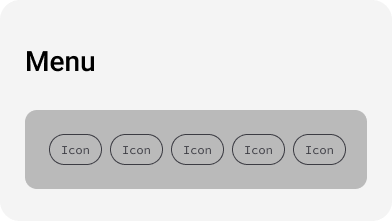
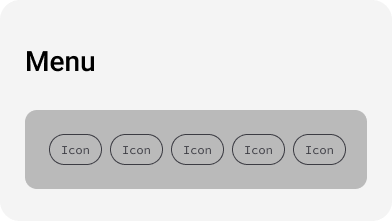

Behavioural Design
The focus of this section of the Style Guide is ensuring the user needs for usability and function are supported.
Button Styles
Menus and Navigation
This is an example of a navigation menu:
The focus of this section of the Style Guide is ensuring the user needs for usability and function are supported.
This is an example of a navigation menu:
